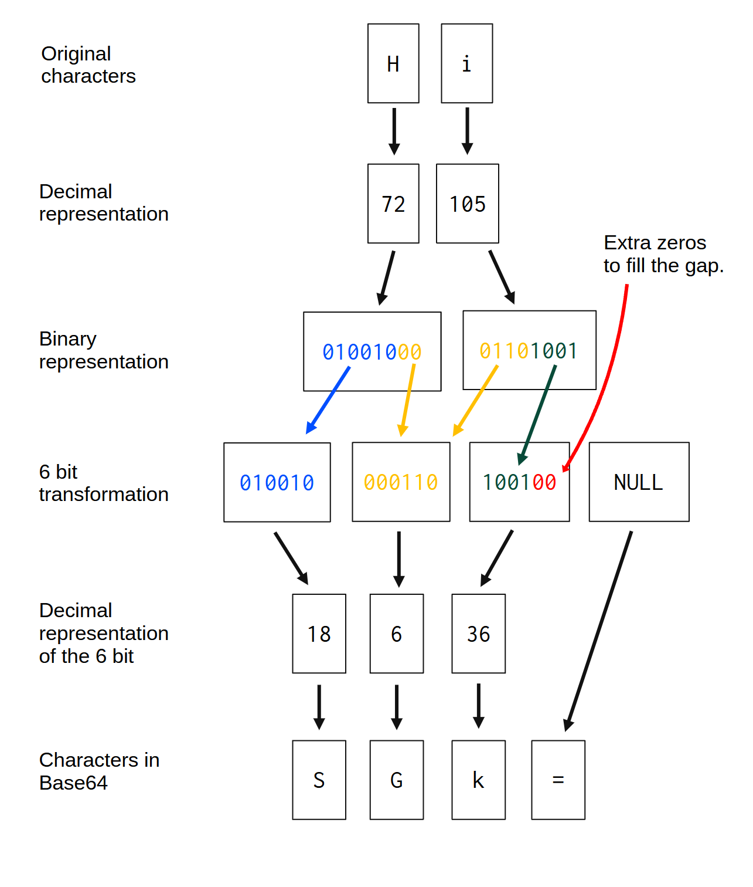
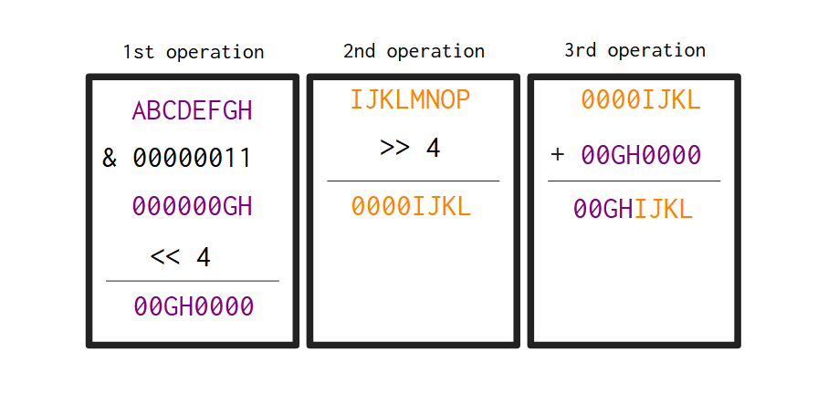
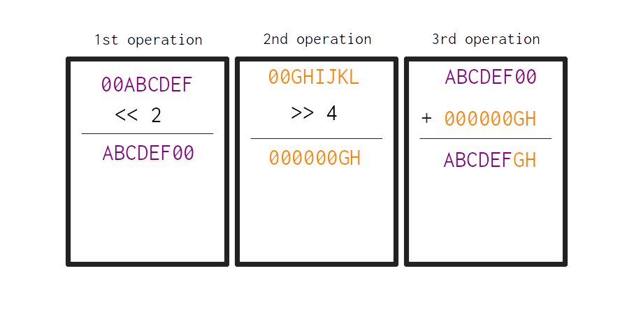

const Base64 = struct {
_table: *const [64]u8,
pub fn init() Base64 {
const upper = "ABCDEFGHIJKLMNOPQRSTUVWXYZ";
const lower = "abcdefghijklmnopqrstuvwxyz";
const numbers_symb = "0123456789+/";
return Base64{
._table = upper ++ lower ++ numbers_symb,
};
}
pub fn _char_at(self: Base64, index: u8) u8 {
return self._table[index];
}
};3 Building a base64 encoder/decoder
As our first small project, I want to implement with you a base64 encoder/decoder in Zig. Base64 is an encoding system which translates binary data to text. A big chunk of the web uses base64 to deliver binary data to systems that can only read text data.
The biggest example of a modern use case for base64 is essentially any email system, like GMail, Outlook, etc. Because email systems normally use the Simple Mail Transfer Protocol (SMTP), which is a web protocol that supports only text data. So, if you need, for any reason, to send a binary file (like for example, a PDF, or an Excel file) as an attachment in your email, these binary files are normally converted to base64, before they are included in the SMTP message. So, the base64 encoding is largelly used in these email systems to include binary data into the SMTP message.
3.1 How the base64 algorithm work?
Now, how exactly the algorithm behind the base64 encoding works? Let’s discuss that. First, I will explain the base64 scale, which is the scale of 64 characters that represents the base64 encoding system.
After that, I explain the algorithm behind a base64 encoder, which is the part of the algorithm that is responsible for encoding messages into the base64 encoding system. Then, after that, I explain the algorithm behind a base64 decoder, which is the part of the algorithm that is responsible for translating base64 messages back into their original meaning.
If you are unsure about the differences between an “encoder” and a “decoder”, take a look at Section 3.2.
3.1.1 The base64 scale
In essence, the base64 encoding system is based on a scale that goes from 0 to 64 (hence the name). Each index in this scale is represented by a character (it is a scale of 64 characters). So, in order to convert some binary data, to the base64 encoding, we need to convert each binary number to the corresponding character in this “scale of 64 characters”.
The base64 scale starts with all ASCII uppercase letters (A to Z) which represents the first 25 indexes in this scale (0 to 25). After that, we have all ASCII lowercase letters (a to z), which represents the range 26 to 51 in the scale. After that, we have the one digit numbers (0 to 9), which represents the indexes from 52 to 61 in the scale. Finally, the last two indexes in the scale (62 and 63) are represented by the characters + and /, respectively.
These are the 64 characters that compose the base64 scale. The equal sign character (=) is not part of the scale itself, but it is a special character in the base64 encoding system. This character is used solely as a suffix, to mark the end of the character sequence, or, to mark the end of meaningful characters in the sequence.
The bulletpoints below summarises the base64 scale:
- range 0 to 25 is represented by: ASCII uppercase letters
-> [A-Z]; - range 26 to 51 is represented by: ASCII lowercase letters
-> [a-z]; - range 52 to 61 is represented by: one digit numbers
-> [0-9]; - index 62 and 63 are represented by the characters
+and/, respectively; - the character
=represents the end of meaningful characters in the sequence;
3.1.2 Creating the scale as a lookup table
The best way to represent this scale in code, is to represent it as a lookup table. Lookup tables are a classic strategy in computer science to speed calculations. The basic idea is to replace a runtime calculation (which can take a long time to be done) by a basic array indexing operation.
Instead of calculating the results everytime you need them, you calculate all possible results at once, and then, you store them in an array (which behaves lake a “table”). Then, every time that you need to use one of the characters in the base64 scale, instead of using many resources to calculate the exact character to be used, you simply retrieve this character from the array where you stored all the possible characters in the base64 scale. So we retrieve the character that we need directly from memory.
We can start building a Zig struct to store our base64 decoder/encoder logic. We start with the Base64 struct below. You can see that, for now, we only have one single data member in this struct, i.e. the member _table, which represents our lookup table. We also have an init() method, to create a new instance of a Base64 object, and, a _char_at() method, which is a “get chat at index …” type of function.
In other words, the _char_at() method is responsible for getting the character in the lookup table (i.e. the _table struct data member) that corresponds to a particular index in the “base64 scale”. So, in the example below, we know that the character that corresponds to the index 28 in the “base64 scale” is the character “c”.
const base64 = Base64.init();
try stdout.print(
"Character at 28 index: {c}\n",
.{base64._char_at(28)}
);Character at 28 index: c3.1.3 A base64 encoder
The algorithm behind a base64 encoder usually works on a window of 3 bytes. Because each byte have 8 bits, so, 3 bytes forms a set of \(8 \times 3 = 24\) bits. This is desirable for the base64 algorithm, because 24 bits is divisble by 6, which form a set of 4 groups of 6 bits each.
So the base64 algorithm works by converting 3 bytes at a time into 4 characters in the base64 scale. It keeps iterating through the input string, 3 bytes at a time, and converting them into the base64 scale, producing 4 characters per iteration. It keeps iterating, and producing these “new characters” until it hits the end of the input string.
Now you may think, what if you have a particular string that have a number of bytes that is not divisible by 3? What happens? For example, if you have a string that contains only two characters/bytes, such as “Hi”. How the algorithm would behave in such situation? You find the answer at Figure 3.1. You can see at Figure 3.1 that the string “Hi”, when converted to base64, becomes the string “SGk=”:

Taking the string “Hi” as an example, we have 2 bytes, or, 16 bits in total. So, we lack a full byte (8 bits) to complete the window of 24 bits that the base64 algorithm likes to work on. The first thing that the algorithm does, is to check how to divide the input bytes into groups of 6 bits.
If the algorithm notice that there is a group of 6 bits that, have some bits in it, but, at the same time, it is not full (in other words, \(0 < nbits < 6\), being \(nbits\) the number of bits), meaning that, it lacks some bits to fill the 6-bits requirement, the algorithm simply add extra zeros in this group to fill the space that it needs. That is why at Figure 3.1, on the third group after the 6-bit transformation, 2 extra zeros were added to fill the gap in this group.
So, when we have a 6-bit group that is not completely full, like the third group, extra zeros are added to fill the gap. But what about when an entire 6-bit group is empty, or, it simply doesn’t exist? This is the case of the fourth 6-bit group exposed at Figure 3.1.
This fourth group is necessary, because the algorithm works on 4 groups of 6 bits. But the input string does not have enough bytes to create a fourth 6-bit group. Every time that this happens, where a entire group of 6 bits is empty, this group becomes a “padding group”. Every “padding group” is mapped to the character = (equal sign), which represents “null”, or, the end of meaninful characters in the sequence. Hence, everytime that the algorithm produces a “padding group”, this group is mapped to =.
As another example, if you give the string “0” as input to a base64 encoder, this string is translated into the base64 sequence “MA==”. The character “0” is, in binary, the sequence 001100001. So, with the 6-bit transformation exposed at Figure 3.1, this single character would produce these two 6-bit groups: 001100, 000000. The remaining two 6-bit groups become “padding groups”. That is why the last two characters in the output sequence (MA==) are ==.
3.1.4 A base64 decoder
The algorithm behind a base64 decoder is essentially the inverse process of a base64 encoder. A base64 decoder needs to be able to translate base64 messages back into their original meaning, i.e. into the original sequence of binary data.
A base64 decoder usually works on a window of 4 bytes. Because it wants to convert these 4 bytes back into the original sequence of 3 bytes, that was converted into 4 groups of 6 bits by the base64 encoder. Remember, in a base64 decoder we are essentially reverting the process made by the base64 encoder.
Each byte in the input string (the base64 encoded string) normally contributes to re-create two different bytes in the output (the original binary data). In other words, each byte that comes out of a base64 decoder is created by transforming merging two different bytes in the input together. You can see this fact at Figure 3.2:

The exact transformations, or, the exact steps applied to each byte from the input to transform them into the bytes in the output, are a bit tricky to visualize in a figure like this. Because of that, I summarized these transformations as “Some bit shifting and additions …”. These transformations will be described in depth later.
Besides that, if you look again at Figure 3.2, you will notice that the character = was completly ignored in the algorithm. Remember, this is just a special character that marks the end of meaninful characters in the base64 sequence. So, every = character in a base64 encoded sequence should be ignored.
3.2 Difference between encode and decode
If you don’t have any previous experience with base64, you might be confused about what is the differente between “encode” and “decode”. Essentially, the terms “encode” and “decode” here have the exact same meaning as they have in the field of encryption (i.e. they mean the same thing as “encode” and “decode” in hashing algorithms, like the MD5 algorithm).
So, “encode” means that we want to encode, or, in other words, we want to translate some message into the base64 encoding system. We want to produce the sequence of base64 characters that represent this original message in the base64 encoding system.
In contrast, “decode” represents the inverse process. We want to decode, or, in other words, translate a base64 message back to it’s original content. So, in this process we get a sequence of base64 characters as input, and produce as output, the binary data that is represented by this sequence of base64 characters.
So, any base64 library is normally composed by these two parts: 1) the encoder, which is a function that encodes (i.e. it converts) any sequence of binary data into a sequence of base64 characters; 2) the decoder, which is a function that converts a sequence of base64 characters back into the original sequence of binary data.
3.3 Calculating the size of the output
One task that we need to do is to calculate how much space we need to reserve for the output, both of the encoder and decoder. This is simple math, and can be done easily in Zig because every array have it’s length (it’s number of bytes) easily accesible by consulting the .len property of the array.
For the encoder, the logic is the following: for each 3 bytes that we find in the input, 4 new bytes are created in the output. So, we take the number of bytes in the input, divide it by 3, use a ceiling function, then, we multiply the result by 4. That way, we get the total number of bytes that will be produced by the encoder in it’s output.
The _calc_encode_length() function below encapsulates this logic. Notice that we convert the .len property of the array, which is always a integer (more precisely, an usize value), into a floating point number of 64 bits (f64). We do this, because the ceiling function (@ceil()) works only with floating point numbers. So, we convert it so that the division with the number 3.0 results in a floating point number. Then, after the ceiling process, we can convert the result back into an integer value (with the @intFromFloat() function).
fn _calc_encode_length(input: []const u8) u64 {
if (input.len < 3) {
const n_output: u64 = 4;
return n_output;
}
const len_as_float: f64 = @floatFromInt(input.len);
const n_output: u64 = @intFromFloat(@ceil(len_as_float / 3.0) * 4.0);
return n_output;
}Is important to notice that, when I am using the built-in functions from Zig to convert data types (@floatFromInt() and intFromFloat()), I’m always annotating explicitly the type of the variable that stores the result of these functions. I do that, because these functions need this information. @floatFromInt() needs to know which type of floating point number I want to use in it’s output. Is it f16? f32? f64? etc. The same goes to @intFromFloat().
Also, you might have notice that, if the input length is less than 3 bytes, then, the output length of the encoder will be always 4 bytes. This is because the algorithm will always fill the gap in the input with zeroes, until it fits the window of 24 bits that the algorithm likes to work on, as I described at Section 3.1.3. So the output of the algorithm will always be 4 bytes in this specific case.
Now, for the decoder, we just need to apply the inverse logic: for each 4 bytes in the input, 3 bytes will be produced in the output of the decoder. I mean, this is roughly true, because we also need to take the = character into account, which is always ignored by the decoder, as we described at Section 3.1.4, and, at Figure 3.2. But we can ignore this fact for now, to make things simpler.
So, the function _calc_decode_length() summarizes this logic that we described. It is very similar to the function _calc_encode_length(), only the division part is twisted, and also, in the special case where we have less than 4 bytes in the input to work on.
fn _calc_decode_length(input: []const u8) u64 {
if (input.len < 4) {
const n_output: u64 = 3;
return n_output;
}
const len_as_float: f64 = @floatFromInt(input.len);
const n_output: u64 = @intFromFloat(@floor(len_as_float / 4.0) * 3.0);
return n_output;
}3.4 Building the encoder logic
In this section, we can start building the logic behind the encode() function, which will be responsible for encoding messages into the base64 encoding system.
If you are an anxious person, and you want to see now the full source code of the implementation for this base64 encoder/decoder, you can find it at the ZigExamples folder in the official repository of this book2.
3.4.1 The 6-bit transformation
The 6-bit transformation presented at Figure 3.1 is the core part of the base64 encoder algorithm. By understanding how this transformation is made in code, the rest of the algorithm becomes much simpler to comprehend.
In essence, this 6-bit transformation is made with the help of bitwise operators. Bitwise operators are essential to any type of low-level operation that is done at the bit-level. For the specific case of the base64 algorithm, the operators bif shift to the left (<<), bit shift to the right (>>), and the bitwise and (&) are used. They are the core solution for the 6-bit transformation.
We have 3 different scenarios that we need to account for in this transformation. First, is the perfect scenario, where we have the perfect window of 3 bytes to work on. Second, we have the scenario where we have a window of only two bytes to work with. And last, we have the scenario where we have a window of one single byte.
In each of these 3 scenarios, the 6-bit transformation works a bit different. To make the explanation easier, I will use the variable output to refer to the bytes in the output of the base64 encoder, and the variable input to refer to the bytes in the input of the encoder.
So, if you have the perfect window of 3 bytes, these are steps for the 6-bit transformation:
output[0]is produced by moving the bits frominput[0]two positions to the right.output[1]is produced by summing two components. First, take the last two bits frominput[0], then, move them four positions to the left. Second, move the bits frominput[1]four positions to the right. Sum these two components.output[2]is produced by summing two components. First, take the last four bits frominput[1], then, move them two positions to the left. Second, move the bits frominput[2]six positions to the right.output[3]is produced by taking the last six bits frominput[2].
This is the perfect scenario, when we have a full window of 3 bytes to work on. Just to make things as clear as possible, the Figure 3.3 demonstrates visually how the step 2 mentioned above works. So this is the step necessary to produce the 2nd byte in the output of the encoder, by taking the 1st byte (dark purple) and the 2nd byte (orange) in the input. You can see that, at the end of the process, we get a new byte that contains the last 2 bits from the 1st byte in the input, and the first 4 bits from the 2nd byte in the input.

On the other hand, we must be prepared for the possibilities where we do not have the perfect window of 3 bytes. If you have a window of 2 bytes, then, the steps 3 and 4, which produces the bytes output[2] and output[3], change a little bit, and they become:
output[2]is produced by taking the last 4 bits frominput[1], then, move them two positions to the left.output[3]is the character'='.
Finally, if you have a window of a single byte, then, the steps 2 to 4, which produces the bytes output[1], output[2] and output[3] change, becoming:
output[1]is produced by taking the last two bits frominput[0], then, move them four positions to the left.output[2]andoutput[3]are the character=.
If these bulletpoints were a bit confusing for you, you may find the Table 3.1 more intuitive. This table unifies all this logic into a simple table. Notice that this table also provides the exact expression in Zig that creates the corresponding byte in the output.
| Number of bytes in the window | Byte index in the output | In code |
|---|---|---|
3.4.2 Bit-shifting in Zig
Bit-shifting in Zig works similarly to bit-shifting in C. All bitwise operators that exists in C are available in Zig. Here, in the base64 encoder algorithm, they are essential to produce the result we want.
For those who are not familiar with these operators, they are operators that operates at the bit-level of your values. This means that these operators takes the bits that form the value you have, and change them in some way. This ultimately also changes the value itself, because the binary representation of this value changes.
We already saw at Figure 3.3 visually what is the effect produced by a bit-shift. But let’s use the first byte in the output of the base64 encoder as another example of what bit-shifting means. This is the easiest byte of the 4 bytes in the output to build. Because we only need to move the bits from the first byte in the input two positions to the right, with the bit shift to the right (>>) operator.
If we take the string “Hi” that we used at Figure 3.1 as an example, the first byte in this string is “H”, which is the sequence 01001000 in binary. If we move the bits of this byte, two places to the right, we get the sequence 00010010 as result. This binary sequence is the value 18 in decimal, and also, the value 0x12 in hexadecimal. Notice that the first 6 bits of the first byte in the input were moved to the end of the byte. With this operation, we get the first byte of the ouput, which corresponds to the index in the base64 scale for the first character in the base64 scale.
const std = @import("std");
const stdout = std.io.getStdOut().writer();
pub fn main() !void {
const input = "Hi";
var output = [4]u8{0,0,0,0};
output[0] = input[0] >> 2;
try stdout.print("{d}\n", .{output[0]});
}18If you recall Figure 3.1, the first byte present in the output should be equivalent to the 6-bit group 010010. Although being visually different, the sequences 010010 and 00010010 are semantically equal. They mean the same thing. They both represent the number 18 in decimal, and the value 0x12 in hexadecimal.
So, don’t take the “6-bit group” factor so seriously. We do not need necessarily to get a 6-bit sequence as result. As long as the meaning of the 8-bit sequence we get is the same of the 6-bit sequence, we are in the clear.
3.4.3 Selecting specific bits with the & operator
If you comeback to Section 3.4.1, you will see that to produce the second and third bytes in the output, we need to select specific bits from the first and second bytes in the input string. But how can we do that? The answer relies on the bitwise and (&) operator.
The Figure 3.3 already showed you what effect this & operator produces in the bits of it’s operands. But let’s make a clear description of it.
In summary, the & operator performs a logical conjunction operation between the bits of it’s operands. In more details, the operator & compares each bit of the first operand to the corresponding bit of the second operand. If both bits are 1, the corresponding result bit is set to 1. Otherwise, the corresponding result bit is set to 0 (Microsoft 2021).
So, if we apply this operator to the binary sequences 1000100 and 00001101 the result of this operation is the binary sequence 00000100. Because only at the sixth position in both binary sequences we had a 1 value. So any position where we do not have both binary sequences setted to 1, we get a 0 bit in the resulting binary sequence.
We loose information about the original bit values from both sequences in this case. Because we no longer know if this 0 bit in the resulting binary sequence was produced by combining 0 with 0, or 1 with 0, etc.
As an example, suppose you have the binary sequence 10010111, which is the number 151 in decimal. How can we get a new binary sequence which contains only the third and fourth bits?
We just need to combine this sequence with the sequence 00110000 (is 0x30 in hexadecimal) using the & operator. Notice that only the third and fourth positions in this binary sequence is setted to 1. As a consequence, only the third and fourth values of both binary sequences are potentially preserved in the output. All the remaining positions are setted to zero in the output sequence, which is 00010000 (is the number 16 in decimal).
const std = @import("std");
const stdout = std.io.getStdOut().writer();
pub fn main() !void {
const bits = 0b10010111;
try stdout.print("{d}\n", .{bits & 0b00110000});
}163.4.4 Allocating space for the output
As I described at Section 2.1.4, to store a variable in the stack, this variable needs to have a known and fixed length at compile-time. This is a problem for our a base64 encoder/decoder case. Because the size of the output (from both the encoder and decoder) depends directly on the size of the input.
Having this in mind, we cannot know at compile time which is the size of the output for both the encoder and decoder. So, if we can’t know the size of the output at compile time, this means that we cannot store in the stack, the output for both the encoder and decoder.
Consequently, we need to store this output on the heap, and, as I commented at Section 2.1.5, we can only store variables in the heap by using allocator objects. So, one the arguments to both the encode() and decode() functions, needs to be an allocator object, because we know for sure that, at some point inside the body of these functions, we need to allocate space on the heap to store the output of these functions.
That is why, both the encode() and decode() functions that I present in this book, have an argument called allocator, which receives a allocator object as input, identified by the type std.mem.Allocator from the Zig standard library.
3.4.5 Writing the encode() function
Now that we have a basic understanding on how the bitwise operators work, and how exactly they help us to achieve the result we want to achieve. We can now encapsulate all the logic that we described at Figure 3.1 and Table 3.1 into a nice function that we can add to our Base64 struct definition, that we started at Section 3.1.2.
You can find the encode() function below. Notice that the first argument of this function, is the Base64 struct itself. Therefore, tis argument clearly signals that this function is a method from the Base64 struct.
Because the encode() function itself is fairly long, I intentionally ommitted the Base64 struct definition in this source code, just for brevity reasons. So, just remember that this function is a public function (or a public method) from the Base64 struct.
Furthermore, this encode() function have two other arguments:
inputis the input sequence of characters that you want to encode in base64;allocatoris an allocator object to use in the necessary memory allocations.
I described everything you need to know about allocator objects at Section 2.2. So, if you are not familiar with them, I highly recommend you to comeback to that section, and read it. By looking at the encode() function, you will see that we use this allocator object to allocate enough memory to store the output of encoding process.
Remember from Section 2.1.4, that the stack can be used only to store variables that have a compile-time known fixed size. Unfortunately, this is not the case here. The size of the encode() output is tidly related to the size of the input from the user. So, the size of the output is only known at runtime. That is why we use an allocator object, to allocate memory on the heap (which allows objects whose size are runtime-known), and store the output there.
The main for loop in the function is responsible for iterating the entire input string. In every iteration, we use a count variable to count how many iterations we had at the moment. When count reaches 3, then, we try to encode the 3 characters (or bytes) that we accumulated until this point in the temporary buffer object (buf).
After encoding these 3 characters and storing the result in the output variable, we reset the count variable to zero, and start to count again on the next iteration of the loop. If the loop hits the end of the string, and, the count variable is less than 3, then, it means that the temporary buffer contains the last 1 or 2 bytes from the input. That is why we have two if statements after the for loop. To deal which each possible case.
pub fn encode(self: Base64,
allocator: std.mem.Allocator,
input: []const u8) ![]u8 {
if (input.len == 0) {
return "";
}
const n_out = _calc_encode_length(input);
var out = try allocator.alloc(u8, n_out);
var buf = [3]u8{ 0, 0, 0 };
var count: u8 = 0;
var iout: u64 = 0;
for (input, 0..) |_, i| {
buf[count] = input[i];
count += 1;
if (count == 3) {
out[iout] = self._char_at(buf[0] >> 2);
out[iout + 1] = self._char_at(
((buf[0] & 0x03) << 4) + (buf[1] >> 4)
);
out[iout + 2] = self._char_at(
((buf[1] & 0x0f) << 2) + (buf[2] >> 6)
);
out[iout + 3] = self._char_at(buf[2] & 0x3f);
iout += 4;
count = 0;
}
}
if (count == 1) {
out[iout] = self._char_at(buf[0] >> 2);
out[iout + 1] = self._char_at(
(buf[0] & 0x03) << 4
);
out[iout + 2] = '=';
out[iout + 3] = '=';
}
if (count == 2) {
out[iout] = self._char_at(buf[0] >> 2);
out[iout + 1] = self._char_at(
((buf[0] & 0x03) << 4) + (buf[1] >> 4)
);
out[iout + 2] = self._char_at(
(buf[1] & 0x0f) << 2
);
out[iout + 3] = '=';
iout += 4;
}
return out;
}3.5 Building the decoder logic
Now, we can focus on writting the base64 decoder logic. Remember from Figure 3.2 that, a base64 decoder do the inverse process of an encoder. So, all we need to do, is to write a decode() function that performs the inverse process that I exposed at Section 3.4.
3.5.1 Mapping base64 characters to their indexes
One thing that we need to do, in order to decode a base64-encoded message, is to calculate the index in the base64 scale of every base64 character that we encounter in the decoder input.
In other words, the decoder receives as input, a sequence of base64 characters. We need to translate this sequence of characters into a sequence of indexes. These indexes are the index of each character in the base64 scale. This way, we get the value/byte that was calculated in the 6-bit transformation step of the encoder process.
There are probably better ways to calculate this, specially using a “divide and conquer” type of strategy. But for now, I am satisfied with a simple and “brute force” type of strategy. The _char_index() function below contains this strategy.
We are essentially looping through the lookup table with the base64 scale, and comparing the character we got with each character in the base64 scale. If these characters match, then, we return the index of this character in the base64 scale as the result.
Notice that, if the input character is '=', the function returns the index 64, which is “out of range” in the scale. But, as I described at Section 3.1.1, the character '=' does not belong to the base64 scale itself. It is a special and meaningless character in base64.
Also notice that this _char_index() function is a method from our Base64 struct, because of the self argument. Again, I ommitted the Base64 struct definition in this example, because of brevity reasons.
fn _char_index(self: Base64, char: u8) u8 {
if (char == '=')
return 64;
var index: u8 = 0;
for (0..63) |i| {
if (self._char_at(i) == char) {
index = i;
break;
}
}
return index;
}3.5.2 The 6-bit transformation
Once again, the core part of the algorithm is the 6-bit transformation. If we understand the necessary steps to perform this transformation, the rest of the algorithm becomes much easier.
First of all, before we actually go to the 6-bit transformation, we need to make sure that we use _char_index() to convert the sequence of base64 characters into a sequence of indexes. So the snippet below will be important for the job to be done. The result of _char_index() will be stored in a temporary buffer, and this temporary buffer is what we are going to use in the 6-bit transformation, instead of the actual input object.
for (0..input.len) |i| {
buf[i] = self._char_index(input[i]);
}Now, instead of producing 4 bytes (or 4 characters) as output per each window of 3 characters in the input, a base64 decoder produces 3 bytes (or 3 characters) as output per each window of 4 characters in the input. Once again, is the inverse process.
So, the steps to produce the 3 bytes in the output are:
output[0]is produced by summing two components. First, move the bits frombuf[0]two positions to the left. Second, move the bits frombuf[1]4 positions to the right. Then, sum these two components.output[1]is produced by summing two components. First, move the bits frombuf[1]four positions to the left. Second, move the bits frombuf[2]2 positions to the right. Then, sum these two components.output[2]is produced by summing two components. First, move the bits frombuf[2]six positions to the left. Then, you sum the result withbuf[3].
Before we continue, let’s try to visualize how these transformations make the original bytes that we had before the encoding process. First, think back at the 6-bit transformation performed by the encoder exposed at Section 3.4. The first byte in the output of the encoder is produced by moving the bits in the first byte of the input two positions to the right.
So, if for example the first byte in the input of the encoder was the sequence ABCDEFGH, then, the first byte in the output of the encoder would be 00ABCDEF (this sequence would be the first byte in the input of the decoder). Now, if the second byte in the input of the encoder was the sequence IJKLMNOP, then, the second byte in the encoder output would be 00GHIJKL (as we demonstrated at Figure 3.3).
So, if the sequences 00ABCDEF and 00GHIJKL sequences are the first byte and the second bytes, respectively, in the input of the decoder, the Figure 3.4 demonstrates visually how these two bytes are transformed into the first byte of the output of the decoder. Notice that the output byte is the sequence ABCDEFGH, which is the original byte from the input of the encoder.

The Table 3.2 presents how the three steps described ealier translate into Zig code:
| Byte index in the output | In code |
|---|---|
3.5.3 Writing the decode() function
The decode() function below contains the entire decoding process. Notice that, we first calculate the necessary size for the output, with _calc_decode_length(), then, we allocate memory for this output with the allocator object.
Three temporary variables are created: 1) count, to hold the window count in each iteration of the for loop; 2) iout, to hold the current index in the output; 3) buf, which is the temporary buffer that holds the base64 indexes to be converted through the 6-bit transformation.
Then, in each iteration of the for loop we fill the temporary buffer with the current window of bytes. When count hits the number 4, then, we have a full window of indexes in buf to be converted, and then, we apply the 6-bit transformation over the temporary buffer.
Notice that we check if the indexes 2 and 3 in the temporary buffer are the number 64, which, if you recall from Section 3.5.1, is when the _calc_index() function receives a '=' character as input. So, if these indexes are equal to the number 64, the decode() function knows that it can simply ignore these indexes. They are not converted, because, as I described before, the character '=' have no meaning, despite being the end of meaningful characters in the sequence. So we can safely ignore them, when they appear in the sequence.
fn decode(self: Base64,
allocator: std.mem.Allocator,
input: []const u8) ![]u8 {
if (input.len == 0) {
return "";
}
const n_output = _calc_decode_length(input);
var output = try allocator.alloc(u8, n_output);
for (output, 0..) |_, i| {
output[i] = 0;
}
var count: u8 = 0;
var iout: u64 = 0;
var buf = [4]u8{ 0, 0, 0, 0 };
for (0..input.len) |i| {
buf[count] = self._char_index(input[i]);
count += 1;
if (count == 4) {
output[iout] = (buf[0] << 2) + (buf[1] >> 4);
if (buf[2] != 64) {
output[iout + 1] = (buf[1] << 4) + (buf[2] >> 2);
}
if (buf[3] != 64) {
output[iout + 2] = (buf[2] << 6) + buf[3];
}
iout += 3;
count = 0;
}
}
return output;
}3.6 The end result
Now that we have both decode() and encode() implemented. We have a full functioning base64 encoder/decoder implemented in Zig. Here is an example of use of our Base64 struct with the encode() and decode() methods that we implemented.
var memory_buffer: [1000]u8 = undefined;
var fba = std.heap.FixedBufferAllocator.init(
&memory_buffer
);
const allocator = fba.allocator();
const text = "Testing some more shit";
const etext = "VGVzdGluZyBzb21lIG1vcmUgc2hpdA==";
const base64 = Base64.init();
const encoded_text = try base64.encode(
allocator, text
);
const decoded_text = try base64.decode(
allocator, etext
);
try stdout.print(
"Encoded text: {s}\n", .{encoded_text}
);
try stdout.print(
"Decoded text: {s}\n", .{decoded_text}
);Encoded text: VGVzdGluZyBzb21lIG1vcmUgc2hpdA==
Decoded text: Testing some more shitYou can also see the full source code at once, by visiting the official repository of this book3. More precisely inside the ZigExamples folder4.
Notice that, the character “0” is different than the actual number 0, which is simply zero in binary.↩︎
https://github.com/pedropark99/zig-book/blob/main/ZigExamples/base64/base64_basic.zig.↩︎
https://github.com/pedropark99/zig-book/blob/main/ZigExamples/base64/base64_basic.zig.↩︎